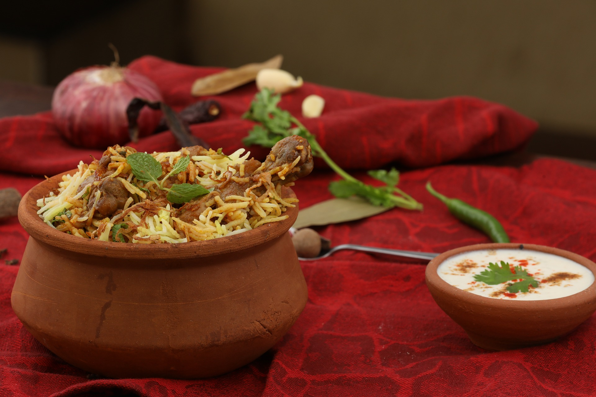

Hyderabadi-Biryani

Ingridents
- Sunflower oil(2tbsp)
- Onion(Chopped)
- Chicken breasts(4)
- Lemon juice
- Garam masala(2tbsp)
- Salt
- Basmati rice(300g)
- Garlic clove
- Ginger
- Coriander
Procedure
-
Heat the oil in a large saucepan over a low heat. Add the onion, cover and cook for 10 minutes until softened.
-
Cut the chicken into bite-size pieces, tip into a bowl, and add the lemon juice, garam masala, chilli powder and salt. Stir well to coat.
-
Rinse the rice several times in cold water, until the water runs clear. Add the garlic and ginger to the onion and cook for 2 minutes, then add the chicken pieces and cook for a further 2 minutes, stirring constantly.
-
Add the rice and stir well then bring to the boil. Cover with a tight-fitting lid, reduce the heat slightly and cook for 5 minutes. Turn off the heat and leave the pan for 10 minutes to allow the rice to finish cooking in the steam. Do not remove the lid. Stir through the coriander and serve immediately.